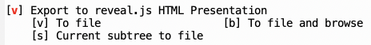
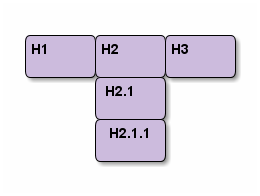
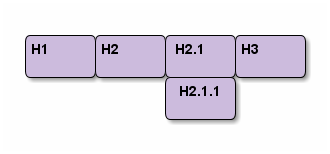

インストールの方法は2つ。
org-re-reveal インストール
M-x package-install [RET] --> org-re-reveal [RET]
init.el に下記追加
(require 'org-re-reveal)
git clone 実行
git clone https://gitlab.com/oer/org-re-reveal.git
load-path に追加init.el に下記追加
(require 'org-re-reveal)
init.el に下記追加。
(setq org-re-reveal-root "file:///PATH-TO-REVEAL.JS")
もしくは Org文書に設定追記
#+REVEAL_ROOT: file:///d:/reveal.js
#+REVEAL_ROOT: https://revealjs.com/
※ reveal.js document 曰く "not recommend this"

#+REVEAL_HLEVEL: 1

#+REVEAL_HLEVEL: 2

My favorite scenes are (in this order) 1. The attack of the Rohirrim 2. Eowyn's fight with the witch king + this was already my favorite scene in the book + I really like Miranda Otto. 3. Peter Jackson being shot by Legolas - on DVD only He makes a really funny face when it happens. #+REVEAL: split But in the end, no individual scenes matter but the film as a whole. Important actors in this film are: - Elijah Wood :: He plays Frodo - Sean Astin :: He plays Sam, Frodo's friend. I still remember him very well from his role as Mikey Walsh in /The Goonies/. -- https://orgmode.org/org.html#Plain-Lists
↓
My favorite scenes are (in this order)
Peter Jackson being shot by Legolas
He makes a really funny face when it happens.
But in the end, no individual scenes matter but the film as a whole. Important actors in this film are:
reveal.js ディレクトリの "css/theme/" から選択可能
# このスライドは simple #+REVEAL_THEME: simple
↓で各テーマを確認できる
https://revealjs.com/#/themesnone, fade, slide, convex, concave, zoom から選択
# このスライドは "slide" #+REVEAL_TRANS: slide
タイトルスライドがいらない場合
#+REVEAL_TITLE_SLIDE:
タイトルスライドのカスタマイズ例
#+TITLE: Org-mode から reveal.js スライドを作成する #org-re-reveal #+Author: Masahiro Kawahara #+REVEAL_TITLE_SLIDE: <h3>%t</h3><h4>%a</h4> # %t はタイトル、 %a は 著者
:PROPERTIES: ... :END: 内に
:reveal_background: #RGB を書く
** *Slide Background :* 背景色 :PROPERTIES: :reveal_background: #123456 :END:
:PROPERTIES: ... :END: 内に
:reveal_background: $IMAGE-PATH を書く
** *Slide Image Background :* 背景画像 :PROPERTIES: :reveal_background: ./img/mesoko.png :END:
** *Repeating Image Background :* リピート :PROPERTIES: :reveal_background: ./img/mesoko.png :reveal_background_size: 200px :reveal_background_repeat: repeat :END:
#+REVEAL_TITLE_SLIDE_BACKGROUND: ./img/title-classmethod.png ↓背景画像をリピートする場合は下記コメントアウトを消す # #+REVEAL_TITLE_SLIDE_BACKGROUND_SIZE: 200px # #+REVEAL_TITLE_SLIDE_BACKGROUND_REPEAT: repeat
#+ATTR_REVEAL: :frag (appear)
- list item 1
- list item 2
- list item 3
Press [↓]
# num:nil ... 見出しの項番を非表示に # toc:nil ... 目次の非表示に #+OPTIONS: num:nil toc:nil
#+REVEAL_EXTRA_CSS: ./local.css
カスタマイズしたいときに